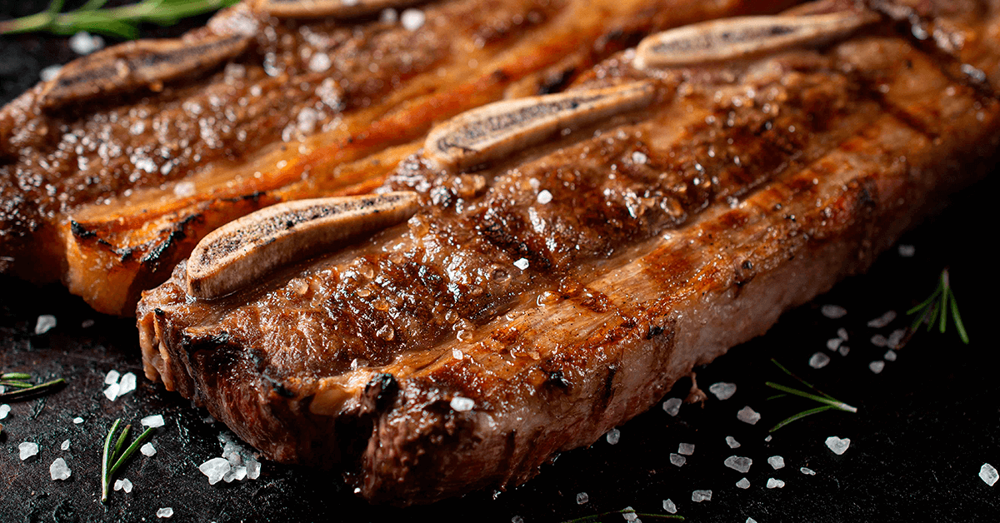

Odin Recipes Website Exercise
Asado de Tira!

Yay! This is the recipe for Asado de Tira!, one of the most important beef cuts in argentine asado, the other one being the Vacío a la parrila.
If you prefer chicken, Pollo a la parrilla could make your day.
The Asado de Tira is the rib cage of the animal sawed to stripes across the bones, with the muscle on top.
It has an, of course, unhealthy amount of fat that ensures that this meat is really tender and delicious, if not good for your blood vessels.
What you will need:
- Asado de tira stripes, as many as required
- Coarse Salt (fine salt is... acceptable)
- Chimichurri sauce (optional)
- Criolla sauce (optional)
Let's grill it, dammit!
- Fire up the coal!
- While still burning with high flame, put the grill on top of the fire and let it heat.
- When hot, use crumpled old newspapers to clean the grill, removing all remains of past asados.
- Wait for the coal to turn to white embers. That's the right time!
- Set the grill beside the embers. Use a shovel to put enough embers below the grill to make a thin layer.
- While the embers get to the right point, put coarse salt on that mofo stripes of asado!
- Set the stripes on the grill with the bones facing down.
- Hold your hand over the meat and count 6-8 secs. Then, you should feel your hand starts to burn (take it away, now!) meaning the temperature is just right.
- Let the meat cook this way for about 35 minutes.
- Turn over and let the boneless part cook for another 25 minutes.
- Do not leave the asado unattended! Do not go away, drink beer and chat with the homies... Cooking asado is a priesthood, you must make sure to keep the temperature right all the time, adding embers as required!
- Serve swiftly, before it gets cold.
Go back to Home